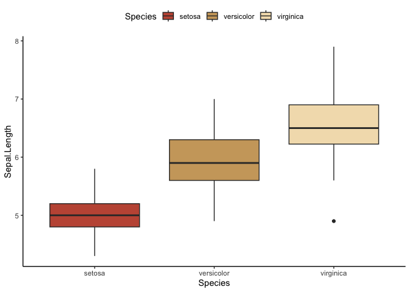

“The greatest value of a picture is when it forces us to notice what we never expected to see.” - John Tukey
Color is one of the most important attributes of a figure. Dedicated choice of color can help us deliver our idea more vividly.
The goal of paintingr is to provide a set of palettes from paintings.
Structure of the package was based on coding from the wesanderson packages.

Palettes


Sunset
Sunset at Grace, Orange and Violet Sky - Felix Edouard Vallotton (1918), Source


{kind=link}
Examples
ggplot2-based examples
Heatmap
Use type="continuous" to automatically interpolate between colors if you want more colors than the palette can offer (n > 5/6).
library(ggplot2)
# Dummy data
x <- LETTERS[1:20]
y <- paste0("var", seq(1,20))
data <- expand.grid(X=x, Y=y)
data$Z <- seq(1,20)+runif(400, 0, 5)
# Heatmap
pal <- paint_palette("Sunset", n=100, type="continuous")
ggplot(data, aes(X, Y, fill= Z)) +
geom_tile() +
scale_fill_gradientn(colours = pal) +
scale_x_discrete(expand = c(0, 0)) +
scale_y_discrete(expand = c(0, 0)) +
coord_equal() 
# Heatmap with palette of "Starrynight"
ggplot(data, aes(X, Y, fill= Z)) +
geom_tile() +
scale_fill_gradientn(colours = paint_palette("Starrynight", n=100, type="continuous")) +
scale_x_discrete(expand = c(0, 0)) +
scale_y_discrete(expand = c(0, 0)) +
coord_equal() 
# Heatmap with palette of "Vesuvius"
ggplot(data, aes(X, Y, fill= Z)) +
geom_tile() +
scale_fill_gradientn(colours = paint_palette("Vesuvius", n=100, type="continuous")) +
scale_x_discrete(expand = c(0, 0)) +
scale_y_discrete(expand = c(0, 0)) +
coord_equal() 
Boxplot
# use iris data from `ggplot2` for demonstration
data(iris)
ggplot(iris, aes(Species, Sepal.Length)) +
geom_boxplot(aes(fill = Species)) +
theme_classic() +
theme(legend.position = "top") +
scale_fill_manual(values = paint_palette("Pearlgirl"))
Scatter
# Scatter
ggplot(iris, aes(Sepal.Length, Sepal.Width)) +
geom_point(aes(color = Species)) +
theme_classic() +
theme(legend.position = "top") +
scale_color_manual(values = paint_palette("Caront"))